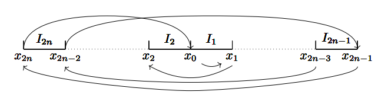

设 $y=f\left(x\right)$ 是连续函数，且值域为定义域子集。
$f^k$：定义 $f^0\left(x\right)=x,\forall k\in\mathbb{N}^\star,f^k\left(x\right)=f\left(f^{k-1}\left(x\right)\right)$。
$k$ 周期点：定义 $x_0$ 为 $f$ 的 $k$ 周期点，当且仅当 $f^k\left(x_0\right)=x_0\land\forall 1\le i\lt k,f^i\left(x_0\right)\neq x_0$。
不动点：若 $x_0$ 为 $f$ 的 $1$ 周期点，称 $x_0$ 为 $f$ 的不动点。
周期轨：定义 $\left\{x_1,x_2,\cdots,x_{n}\right\}$ 为 $f$ 的 $n$ 周期轨，当且仅当 $f\left(x_n\right)=x_1\land\forall 1\le i\lt n,f\left(x_i\right)=x_{i+1}$，且 $x_i$ 两两不同。
周期轨的重排：对于一个周期轨 $\left\{x_1,x_2,\cdots,x_n\right\}$，将所有 $x_k$ 按大小排列为 $\left\{y_1,y_2,\cdots,y_n\right\}$，称为 $\left\{x_1,x_2,\cdots,x_n\right\}$ 的重排。
$U$：对于一个周期轨的重排 $\left\{y_1,y_2,\cdots,y_n\right\}$，$\forall 1\le u\le v\le n$，定义 $U_{u,v}=\left\{y_i\mid u\le i\le v\right\}$。
$f^\star$：对于一个周期轨的重排 $\left\{y_1,y_2,\cdots,y_n\right\}$ 的一个非空子集 $S$，令 $y_p=\min f\left(S\right),y_q=\max f\left(S\right)$，定义 $f^\star\left(S\right)=\left\{y_i\mid p\le i\le q\right\}$。
$\Delta$：对于一个周期轨的重排 $\left\{y_1,y_2,\cdots,y_n\right\}$，定义 $\Delta_i=\left\{y_i,y_{i+1}\right\}$。
$\succ$：若对于任意 $f$，有 $n$ 周期点必有 $m$ 周期点，$n\neq m$，则记作 $n\succ m$。
$T$：$\forall h\in\left[0,1\right]$，$T_h$ 定义域为 $\left[0,1\right]$，且 $T_h\left(x\right)=\min\left\{h,1-2\lvert x-\dfrac{1}{2}\rvert\right\}$。
$H$：$\forall m\in\mathbb{N}^\star$，对于所有 $T_1$ 上的 $m$ 周期轨 $O$，$H\left(m\right)=\inf\left\{\max O\right\}$。特别地，$\forall n\in\mathbb{N}$，定义 $H_{\left(2n+1\right)2^\infty}=\lim\limits_{m\to +\infty}H\left(\left(2n+1\right)2^m\right)$。
迭代收敛：若 $n\to +\infty,f^n\left(x\right)$ 收敛则称 $f$ 在 $x$ 处迭代收敛。
恰当收敛：若 $f$ 定义域上每个点迭代收敛，且 $\forall n\in\mathbb{N}^\star$，$f\left(x\right)$ 和 $x$ 的大小关系与 $f^n\left(x\right)$ 与 $f\left(x\right)$ 的大小关系相同，则称 $f$ 恰当收敛。
准周期点：若 $x,y\in D_f,m\in\mathbb{N}^\star$，$y$ 是 $m$ 周期点，且 $\lim\limits_{n\to +\infty}\lvert f^n\left(x\right)-f^n\left(y\right)\rvert=0$，则 $x$ 为 $f$ 的 $m$ 准周期点。
混沌：若 $f$ 的周期点的最小周期没有上界，且存在 $D_f$ 的不可数子集 $S$，满足 $S$ 中无准周期点，且 $\forall x,y\in S,x\neq y,\lim\limits_{n\to +\infty}\sup\lvert f^n\left(x\right)-f^n\left(y\right)\rvert\gt 0,\lim\limits_{n\to +\infty}\inf\lvert f^n\left(x\right)-f^n\left(y\right)\rvert=0$，则称 $f$ 是混沌的。
若 $f$ 有 $p$ 周期点 $x_0$，则 $x_0$ 也是 $f^q$ 的 $\dfrac{p}{\gcd\left(p,q\right)}$ 周期点。
证明：略。
若 $x_0$ 是 $f^{2^k}$ 的 $m$ 周期点，$m$ 为偶数，则 $x_0$ 是 $f$ 的 $2^km$ 周期点。
证明：设 $x_0$ 是 $f$ 的 $n$ 周期点，$m=\dfrac{n}{\gcd\left(n,2^k\right)}$ 为偶数，所以 $2^k\vert n$，即 $n=2^km$。
若 $I,J$ 为闭区间，$f\left(I\right)\supseteq J$，则 $\exists K\subseteq I,f\left(K\right)=J$，且 $K$ 也为闭区间。
证明：设 $I=\left[a,b\right],J=\left[c,d\right]$，取 $u=\sup\left\{x\in\left[a,b\right]\mid f\left(x\right)=c\right\}$，若 $\exists x\in\left[u,b\right],f\left(x\right)=d$ 则令 $v=\inf\left\{x\in\left[u,b\right]\mid f\left(x\right)=d\right\},K=\left[u,v\right]$；否则令 $v=\sup\left\{x\in\left[a,u\right]\mid f\left(x\right)=d\right\},K=\left[v,u\right]$ 即可。
若 $I$ 为闭区间，$f\left(I\right)\supseteq I$，则 $f$ 在 $I$ 上有不动点。
证明：略。
若 $I_1,I_2,\cdots,I_n$ 为一列闭区间，满足 $f\left(I_n\right)\supseteq I_1\land \forall 1\le i\lt n,f\left(I_i\right)\supseteq I_{i+1}$，则 $\exists x_0\in I_1,f^n\left(x_0\right)=x_0$，且 $\forall 1\le i\le n,f^{i-1}\left(x_0\right)\in I_i$。
证明：对于 $k$ 从 $n-1$ 到 $1$，依次令 $I_k\rightarrow J_k$，使得 $J_k\subseteq I_k\land f^{k}\left(J_k\right)=I_{k+1}$，再由 $f^{n}\left(I_1\right)\supseteq I_1$ 知 $f^n$ 存在不动点 $x_0$，显然 $f^k\left(x_0\right)\in I_k$。
设 $n\in\mathbb{N}^\star$，$f$ 有 $N=2n+1$ 周期轨 $\left\{x_1,x_2,\cdots,x_{N}\right\}$ 及其重排 $\left\{y_1,y_2,\cdots,y_{N}\right\}$，则 $\exists 1\lt m\lt N-1,1\le l\lt N,m\neq l$，满足 $f\left(y_m\right)\gt y_m,f\left(y_{m+1}\right)\lt y_{m+1},f^\star\left(\Delta_l\right)\supseteq\Delta_m$。
证明：$f\left(x_1\right)\gt x_1,f\left(x_N\right)\lt x_{N}$，所以满足条件的 $m$ 存在。
设 $A=\left\{y_i\mid f\left(y_i\right)\le y_m\right\},B=\left\{y_i\mid f\left(y_i\right)\ge y_{m+1}\right\}$，则 $A$ 和 $B$ 构成 $U_{1,N}$ 的一个划分。
显然 $y_m\in B,y_{m+1}\in A$，且 $\lvert A\rvert=m,\lvert B\rvert=N-m$，则由奇偶性可知 $A\neq U_{m+1,N},B\neq U_{1,m}$。
若 $A\cap U_{1,m}=\varnothing$，则 $A\subset U_{m+1,N},B\cap U_{m+1,N}\neq \varnothing$，由 $y_{m+1}\in A$ 知 $\exists l\gt m,y_l\in A\land y_{l+1}\in B$，即 $f^\star\left(\Delta_l\right)\supseteq\Delta_m$。
若 $A\cap U_{1,m}\neq\varnothing$，则由 $y_m\in B$ 知 $\exists l\lt m,y_l\in A\land y_{l+1}\in B$，即 $f^\star\left(\Delta_l\right)\supseteq\Delta_m$。
设 $n\in\mathbb{N}^\star$，$f$ 有 $N=2n+1$ 周期轨 $\left\{x_1,x_2,\cdots,x_{N}\right\}$ 及其重排 $\left\{y_1,y_2,\cdots,y_{N}\right\}$，且 $\forall 1\le k\lt n$，$f$ 没有 $2k+1$ 周期轨，$m,l$ 定义同上，则 $m,l$ 满足 $f^{\star^0}\left(\Delta_m\right)\subsetneq f^{\star^1}\left(\Delta_m\right)\subsetneq\cdots\subsetneq f^{\star^{N-2}}\left(\Delta_m\right)$，且 $f^{\star^{N-2}}=U\left(1,N\right),\Delta_l\nsubseteq f^{\star^{N-3}}$。
证明：$n=1$ 时显然成立。
$n\gt 1$ 时，沿用 $m,l$ 的构造，因为 $\lvert\Delta_m\rvert=2$，周期长度为 $N$，所以 $f^{\star^{N-2}}=U\left(1,N\right)$。
令 $f^{\star^i}$ 对应的闭区间为 $V_i=\left[y_{p_i},y_{q_i}\right]$，设 $s=\min\left\{x\mid\Delta_l\subseteq f^{\star^{x}}\right\}$。
若 $s\lt N-2$，则令 $I_1=V_1,I_2=V_2,\cdots, I_{s-1}=V_{s-1},I_s=\left[y_l,y_{l+1}\right],I_{s+1}=I_{s+2}=\cdots=I_{N-2}=\left[y_m,y_{m+1}\right]$，存在 $x_0$ 满足 $f^{N-2}\left(x_0\right)=x_0\land \forall 1\le k\le N-2,f^{k-1}\left(x_0\right)\in I_k$。
显然 $\forall 1\le i\le N,x_0\neq y_i$，则 $\forall k\neq s,f^{k-1}\left(x_0\right)\notin\left[y_l,y_{l+1}\right]$，即 $x_0$ 为 $f$ 的 $2n-1$ 周期点，矛盾。
可以看出，$l$ 是唯一的。
$f,n,N,m,l,\left\{x_1,x_2,\cdots,x_n\right\},\left\{y_1,y_2,\cdots,y_n\right\}$ 定义同上，则只要适当选取 $x_1$，按大小排列 $x_i$ 结果必为 $x_{2n}\lt x_{2n-2}\lt\cdots\lt x_{2}\lt x_{0}\lt x_{1}\lt x_{3}\lt\cdots\lt x_{2n+1}$ 或 $x_{2n+1}\lt x_{2n-1}\lt x_{2n-3}\lt\cdots\lt x_1\lt x_0\lt x_2\lt\cdots\lt x_{2n}$。
证明：$\forall 1\le k\lt N-2,\lvert f^{\star^k}\rvert=k+2,\Delta l\notin f^{\star^k}$，归纳证明即可。

（图片来自网络，便于理解）
$f,n,N,m,l,\left\{x_1,x_2,\cdots,x_n\right\},\left\{y_1,y_2,\cdots,y_n\right\}$ 定义同上，则 $\forall k\gt N$，$f$ 有 $k$ 周期点。
证明：对于 $\forall 0\le i\le N-2$，令 $f^{\star^i}$ 对应的闭区间为 $V_i=\left[y_{p_i},y_{q_i}\right]$。
令 $I_1=V_0,\forall 2\le i\le N-1,I_i=V_i\setminus I_{i-1}$，显然 $I_i$ 两两不交。
令 $J_1=I_1,J_2=I_2,\cdots,J_N=J_{N+1}=\cdots=J_k=I_n$，则 $\exists x_0\in I_1,\forall 1\le i\le k,f^{i-1}\left(x_0\right)\in J_i$。
由 $\forall 1\le i\le N, x_0\neq y_i$ 知 $x_0$ 为 $f$ 的 $k$ 周期点。
$f,n,N,m,l,\left\{x_1,x_2,\cdots,x_n\right\},\left\{y_1,y_2,\cdots,y_n\right\}$ 定义同上，则 $\forall k\in\mathbb{N}^{\star}$，$f$ 有 $2k$ 周期点。
证明：$2k\gt N$ 由上一条可知。
$2k\lt N$ 时，令 $J_1=I_{N-2k+1},J_2=I_{N-2k+2},\cdots,J_{2k}=I_{N}$ 即可。
$2\succ 1$
证明：显然。
$4\succ 2$
证明：取 $f$ 的一个 $4$ 周期轨 $\left\{x_1,x_2,x_3,x_4\right\}$ 使得 $x_1=\min\left\{x_1,x_2,x_3,x_4\right\}$。
若 $x_1\lt x_2\lt x_3\lt x_4$，则 $\left[x_1,x_2\right]\rightarrow\left[x_2,x_3\right]\rightarrow\left[x_3,x_4\right]\rightarrow\left[x_1,x_2\right]$。
若 $x_1\lt x_2\lt x_4\lt x_3$，则 $\left[x_1,x_2\right]\rightarrow\left[x_4,x_3\right]\rightarrow\left[x_1,x_2\right]$。
若 $x_1\lt x_3\lt x_2\lt x_4$，则 $\left[x_1,x_3\right]\rightarrow\left[x_2,x_4\right]\rightarrow\left[x_1,x_3\right]$。
若 $x_1\lt x_3\lt x_4\lt x_2$，则 $\left[x_1,x_3\right]\rightarrow\left[x_4,x_2\right]\rightarrow\left[x_1,x_3\right]$。
若 $x_1\lt x_4\lt x_2\lt x_3$，则 $\left[x_4,x_2\right]\rightarrow\left[x_2,x_3\right]\rightarrow\left[x_4,x_2\right]$。
若 $x_1\lt x_4\lt x_3\lt x_2$，则 $\left[x_1,x_4\right]\rightarrow\left[x_3,x_2\right]\rightarrow\left[x_4,x_3\right]\rightarrow\left[x_1,x_4\right]$。
由已知的 $3\succ 2$ 可证。
$\forall k\in\mathbb{N}^\star,2^k\succ 2^{k-1}$
证明：$k\le 2$ 的情况由上两条可知。
$k\gt 2$ 时，若 $f$ 有 $2^k$ 周期点，则 $f^{2^{k-2}}$ 有 $4$ 周期点，则 $f^{2^{k-2}}$ 有 $2$ 周期点，则 $f$ 有 $2^{k-1}$ 周期点。
$\forall n\in\mathbb{N}^\star,s,t\in\mathbb{N},\left(2n+1\right)2^s\succ 2^t$
证明：若 $f$ 有 $\left(2n+1\right)2^s$ 周期点，则 $f^{2^s}$ 有 $2n+1$ 周期点，则 $f^{2^s}$ 有 $2^t$ 周期点，$f$ 有 $2^{s+t}$ 周期点。
所以 $\left(2n+1\right)2^s\succ 2^{s+t}\succ 2^m$。
$\forall n,m\in\mathbb{N}^\star,0\le s\lt t,\left(2n+1\right)2^s\succ\left(2m+1\right)2^t$
证明：若 $f$ 有 $\left(2n+1\right)2^s$ 周期点，则 $f^{2^s}$ 有 $2n+1$ 周期点，则 $f^{2^s}$ 有 $\left(2m+1\right)2^{t-s}$ 周期点，$f$ 有 $\left(2m+1\right)2^t$ 周期点。
所以 $\left(2n+1\right)2^s\succ 2^{m+s}\succ 2^m$。
$\forall 1\le n\lt m,s\in\mathbb{N},\left(2n+1\right)2^s\succ\left(2m+1\right)2^s$
证明：$f$ 有 $\left(2n+1\right)2^s$ 周期点，则 $f^{2^s}$ 有 $2n+1$ 周期点，则 $f^{2^s}$ 有 $2m+1$ 周期点 $x_0$。
则 $x_0$ 也是 $f$ 的周期点。设 $x_0$ 是 $f$ 的 $N$ 周期点，则 $N=\left(2m+1\right)\gcd\left(N,2^s\right)$，即 $N=\left(2m+1\right)2^t,0\le t\le s$。
$t=s$ 时显然成立。$t\lt s$ 时由 $\left(2n+1\right)2^t\succ\left(2m+1\right)2^s$ 知成立。
Sharkovskii 定理：$\succ$ 构成 $\mathbb{N}^{\star}$ 上的全序关系（Sharkovskii 序）：$3\succ 5\succ 7\succ\cdots\succ 3\times 2^1\succ 5\times 2^1\succ 7\times 2^1\succ\cdots\succ 3\times 2^2\succ 5\times 2^2\succ 7\times 2^2\succ\cdots\succ\cdots\succ 2^3\succ 2^2\succ 2^1\succ 1$
证明：由上述定理可知。
$T_0$ 中只有 $0$ 是 $1$ 周期点，其它点不是周期点。
证明：显然。
$\forall n\in\mathbb{N}^\star$，$T_1$ 中存在 $n$ 周期点且有限。
证明：$T_1\left(\dfrac{2}{7}\right)=\dfrac{4}{7},T_1\left(\dfrac{4}{7}\right)=\dfrac{6}{7},T_1\left(\dfrac{6}{7}\right)=\dfrac{2}{7}$，所以 $T_1$ 存在 $3$ 周期点，即存在所有周期点。
由 $T_1^n$ 的图像可知 $T_1^n$ 含有 $2^n$ 个不动点，即 $f$ 的 $n$ 周期点有限。
$\forall m\in\mathbb{N}^\star,T_{H\left(m\right)}$ 中 $H\left(m\right)$ 所在周期为 $m$ 周期轨，其它周期轨中无 $H\left(m\right)$ 且长度不为 $m$。
证明：显然。
$\forall m\in\mathbb{N}^\star,h\ge H\left(m\right)$，$T_h$ 中有 $m$ 周期点。
证明：显然。
$\forall m\in\mathbb{N}^\star,h\lt H\left(m\right)$，$T_h$ 中无 $m$ 周期点。
证明：若存在 $m$ 周期轨，则 $h$ 在周期轨中一定出现了恰好一次，则 $h$ 为 $T_1$ 中的 $m$ 周期点，矛盾。
$\forall n,m\in\mathbb{N}^\star,H\left(\left(2n-1\right)2^\infty\right)\neq H\left(m\right),n\neq m\Rightarrow H\left(n\right)\neq H\left(m\right),H\left(\left(2n-1\right)2^\infty\right)\neq H\left(\left(2m-1\right)2^\infty\right)$
证明：显然。
$n\succ m\Rightarrow H\left(n\right)\gt H\left(m\right)$
证明：显然。
对于任意 Sharkovskii 序的非空尾集 $T$，均存在定义在 $\left[0,1\right]$ 上的连续函数 $f$，使得 $\forall m\in\mathbb{N}^\star$，$f$ 存在 $m$ 周期点当且仅当 $m\in T$。
证明：显然。
若 $f$ 定义域为 $\left[a,b\right]$ 且无 $2$ 周期点，则 $\forall x\in\left[a,b\right],n\in\mathbb{N}^\star$，$f\left(x\right)$ 与 $x$ 的大小关系与 $f^n\left(x\right)$ 与 $x$ 的大小关系相同。
证明：$n=1$ 时显然成立。$n\gt 1$ 时假设对 $1\le m\lt n$ 均成立，
$f\left(x\right)\gt x$ 时，
- 若 $f^n\left(x\right)\lt x$，由 $f^n\left(a\right)\ge a$，令 $u=\sup\left\{t\in\left[a,x\right)\mid f^n\left(t\right)=t\right\}$。
则 $\forall v\in\left(u,x\right),f^n\left(v\right)\lt v\land f\left(v\right)\neq v$，由 $f\left(x\right)\gt x$ 知 $f\left(v\right)\gt v$，则 $f^{n-1}\left(v\right)\gt v$。
取足够靠近 $u$ 的 $v$ 使得 $u\lt v\lt f^{n-1}\left(v\right)\lt x$，则 $f^n\left(v\right)\gt f^{n-1}\left(v\right)\gt v$，矛盾。
- 若 $f^n\left(x\right)=x$，则由 Sharkovskii 序可知矛盾。
$f\left(x\right)\lt x$ 时同理。
$f\left(x\right)=x$ 时显然 $f^n\left(x\right)=x$。
Coppel 定理：若 $f$ 定义域为 $\left[a,b\right]$ 且无 $2$ 周期点，则 $f$ 恰当收敛。
证明：若 $f$ 在 $x_0$ 上不收敛，设 $x_n=f^{n}\left(x_0\right)$，则 $\forall n\ge 0,x_n\neq x_{n+1}$。由单调收敛定理，$x_{n+1}\gt x_n,x_{n+1}\lt x_n$ 均对无穷多个 $n$ 成立。
设 $x_n\lt x_{n+1}$，则 $\forall m\gt n,x_n\lt x_m$。所以满足 $x_n\lt x_{n+1}$ 的 $x_n$ 单调递增，设极限为 $l$。
同理，设满足 $x_n\gt x_{n+1}$ 的 $x_n$ 极限为 $k$，若 $l\neq k$ 则 $f\left(l\right)=k,f\left(k\right)=l$，矛盾。
所以 $k=l$，即 $f$ 在 $x_0$ 处迭代收敛。因此 $f$ 恰当收敛。
若 $f$ 在定义域 $D_f$ 上无 $2$ 周期点，且紧集 $I\subseteq D_f$ 满足 $f\left(I\right)\subseteq I$，则 $f$ 在 $I$ 上恰当收敛。
证明：设 $I$ 的凸包为 $\left[l,r\right]$，令 $g$ 的定义域为 $\left[l,r\right]$，$g\left(x\right)=\max\left\{\min\left\{f\left(x\right),r\right\},l\right\}$，则 $g$ 无 $2$ 周期点，所以 $g$ 恰当收敛，$f$ 在 $I$ 上恰当收敛。
若 $f$ 在 $I$ 上满足 $f\left(I\right)\subseteq I$，且 $I$ 上每个点迭代收敛则 $f$ 恰当收敛。
证明：$\forall x\in I$，令 $S=\left\{y\mid \exists n\in\mathbb{N},f^n\left(x\right)=y\right\}$，对 $S$ 的闭包应用上一条定理可知 $f$ 在 $x$ 处恰当收敛。由 $x$ 的任意性知 $f$ 恰当收敛。
设 $D_f=\mathbb{R}_+$，$f$ 无 $2$ 周期点，存在 $p\le q$ 满足 $p,q$ 均为不动点（可相等），$x\lt p$ 时 $f\left(x\right)\gt x$，$x\gt q$ 时 $f\left(x\right)\lt x$，$f$ 在 $\left(0,p\right)$ 上有界，则 $f$ 恰当收敛。
证明：设 $b=\sup\left\{f\left(x\right)\mid x\le q\right\},a=\inf\left\{f\left(x\right)\mid p\le x\le b\right\}$，则 $\forall x\in\mathbb{R}_+,\lim\limits_{n\to +\infty}\sup f^n\left(x\right)\le b$。
$\forall x_0\in\mathbb{R}_+$，令 $x_n=f^n\left(x_0\right)$，$\forall \epsilon\gt 0,\exists\delta\gt 0$，当 $x_n$ 不超过 $b+\delta$ 时，$f\left(x_n\right)$ 不会小于 $a-\epsilon$，所以 $\lim\limits_{n\to +\infty}\inf f^n\left(x_0\right)\ge a$。
因此 $\forall x\in\mathbb{R}_+,S=\left\{y\mid \exists n\in\mathbb{N},f^n\left(x\right)=y\right\}$ 的闭包为紧集，$f$ 在 $S$ 上恰当收敛，即 $f$ 在 $\mathbb{R}_+$ 上恰当收敛。
若 $f$ 有 $3$ 周期点，则 $f$ 是混沌的。
证明：显然 $f$ 周期点的最小周期无上界。
设 $F\left(u\right)=v,F\left(v\right)=w,F\left(w\right)=u$，$u,v,w$ 两两不同且 $u$ 为最小值。若 $v\lt w$ 则令 $K=\left[u,v\right],L=\left[v,w\right]$，否则令 $K=\left[w,v\right],L=\left[u,w\right]$。
设 $r\in\left(\dfrac{3}{4},1\right)$，$M^r$ 为无限区间列 $\left\{M^r_1,M^r_2,M^r_3,\cdots\right\}$ 满足 $\forall n\in\mathbb{N}^\star,M^r_n=K$ 或 $M^r_n\subseteq L$，$F\left(M^r_n\right)\supseteq M^r_{n+1}$，若 $M^r_n=K$ 则 $n$ 为平方数。
$\forall r\in\left(\dfrac{3}{4},1\right),n\in\mathbb{N}^\star$，定义 $P\left(M^r,n\right)=\sum\limits_{i=1}^n\left[M^r_i=K\right]$，则 $M^r$ 满足 $\lim\limits_{n\to +\infty}\dfrac{P\left(M^r,n^2\right)}{n}=r$。
显然 $\forall r\in\left(\dfrac{3}{4},1\right)$，满足条件的 $M^r$ 存在。
由闭区间套定理，$\forall r\in\left(\dfrac{3}{4},1\right),\exists x_r,\forall n\in\mathbb{N}^\star,f^n\left(x_r\right)\in M^r_n$。
因为 $\forall r\in\left(\dfrac{3}{4},1\right),n\in\mathbb{N}^\star,M^r_n=K\Rightarrow M^{r}_{n+1}\in L\land M^r_{n+2}\in L$，
设 $m$ 为 $K$ 和 $L$ 的公共端点，由 $f^2$ 的连续性，若 $f^n\left(x_r\right)\in K$，则 $f^n\left(x_r\right)$ 与 $m$ 距离必须大于某个正实数 $\delta$。
$\forall \dfrac{3}{4}\lt r_1\lt r_2\lt 1$，因为存在无穷多个 $n$ 使得 $M^{r_1}_{n^2}\in L\land M^{r_2}_{n^2}=K$，所以 $\lim\limits_{n\to +\infty}\sup\lvert f^n\left(x_{r_1}\right)-f^n\left(x_{r_2}\right)\rvert\ge\delta\gt 0$。
同样地，如果 $y$ 为周期点，也有 $\lim\limits_{n\to +\infty}\sup\lvert f^n\left(x_{r}\right)-f^n\left(y\right)\rvert\ge\delta\gt 0$。
设 $L=\left[u_0,v_0\right]$，由 $f\left(\left[u_0,v_0\right]\right)\supseteq\left[u_0,v_0\right]$ 可知存在 $\left[u_1,v_1\right]$ 使得 $\left[u_1,v_1\right]\subseteq\left[u_0,v_0\right],f\left(\left[u_1,v_1\right]\right)=\left[u_0,v_0\right]$ 且 $f\left(u_1\right)=v_0,f\left(v_1\right)=u_0$。
同理构造出 $\left[u_2,v_2\right],\left[u_3,v_3\right],\cdots$。设 $u^\star=\lim\limits_{n\to +\infty}u_n,v^\star=\lim\limits_{n\to +\infty}v_n$，则 $f\left(u_n\right)=v_n,f\left(v_n\right)=u_n$。
$\forall r\in\left(\dfrac{3}{4},1\right),n\in\mathbb{N}^\star,M^r_{n^2}=M^r_{\left(n+1\right)^2}=K$，令 $M^r_{n^2+1}=\left[u_{2n-1},u^\star\right],M^r_{n^2+3}=\left[u_{2n-3},u^\star\right],\cdots,M^r_{n^2+2n-1}=\left[u_1,u^\star\right]$，
$M^r_{n^2+2}=\left[v^\star,v_{2n-2}\right],M^r_{n^2+4}=\left[v^\star,v_{2n-4}\right],\cdots,M^r_{n^2+2n}=\left[v^\star,v_0\right]$，可以发现仍然符合条件。
因为 $r\gt\dfrac{3}{4}$，所以 $\forall r_1\neq r_2$，存在无限个 $n$ 使得 $M^{r_1}_{n^2}=M^{r_1}_{\left(n+1\right)^2}=M^{r_2}_{n^2}=M^{r_2}_{\left(n+1\right)^2}=K$，因此 $\lvert M^{r_1}_{n^2+1}-M^{r_2}_{n^2+1}\rvert$ 可以任意小，即极限是 $0$。